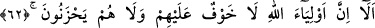
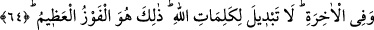

ALLAH’IN DOSTLARI
62. İyi bil ki Allah’ın dostlarına korku yoktur ve onlar üzülmeyeceklerdir.
63. Onlar îmân edip de takvâya ermiş olanlardır.
64. Dünya hayatında da ahirette de onlara müjde vardır. Allah’ın sözlerinde aslâ
değişme yoktur. İşte bu, büyük kurtuluşun kendisidir.
“İyi bil ki” dikkat edin ve bilin ki “Allah’ın dostlarına” yâni Allah’ın sevgilisi ve
nefislerinin düşmanı olanlara, demektir. Çünkü velilik, Allah’ı ve kendi nefislerini
mârifet (bilip tanımak) demektir. Allah’ı mârifet O’nu muhabbet nazarıyla görmektir.
Nefsini mârifet ise nefsin halleri ve özellikleri üzerindeki perde açıldığında onu
düşman nazarıyla görmektir. Nefsi gereği gibi tanıyıp onun Allah’ın da senin de
düşmanın olduğunu anladığın, sabırla ve sıkıntılara aldırmadan onu tedavi ettiğin zaman
nefsin hile ve tuzaklarından emin olursun. Ona şefkat ve rahmet nazarıyla bakmazsın. et-
Te’vîlâtü’n-Necmiyye’de böyle denilmektedir.
Ebüssuûd Efendi (r.h.) şöyle der: “Sözlükte velî, yakın demektir. Allah’ın
velilerinden maksad ise Allah’a rûhânî olarak yakın olan hâlis mü’minlerdir.”
Çünkü onlar Allah’a itaat ederek O’nun velisi olurlar. Yani Allah’a müstağrak olarak
O’na yaklaşırlar. Öyle ki gördükleri zaman O’nun kudretinin delillerini görürler,
işittikleri zaman O’nun âyetlerini işitirler, konuştukları zaman O’nu överek konuşurlar,
hareket ettiklerinde O’na hizmet için hareket ederler, gayret ettikleri zaman O’na tâat
etmeye çalışırlar.
Allah’ın velilerine iki cihanda da herhangi bir istenmeyen durumun başlarına gelmesi
ile ilgili bir “korku yoktur.” Korku, istenmeyen bir durumun ileride gerçekleşmesi
endişesinden kaynaklanır. “ve onlar” bir isteklerinin elden kaçması hâlinde
“üzülmeyeceklerdir”
Üzülme ise geçmişte kötü gördüğü bir şeyin gerçekleşmesinden ya da yine geçmişte
sevdiği bir şeyi elinden kaçırmaktan kaynaklanır. Yani üzülmelerini gerektirecek şeyler
başlarına gelmeyecektir. Gelecek olsa bile endişelenmeyecekler, korkmayacaklardır.
Bilâkis dâimi bir sevinç ve neş’e içerisinde olacaklardır.
Nasıl böyle olmasın ki Allah Teâlâ’nın celâl ve heybetini yüceltmek, sadece kulluk
haklarını yerine getirmek için korku ve haşyet hissetmek, havâs ve mukarreblerin
özelliklerindendir.